Before It Falls
A living cherry blossom landscape shaped by human presence, movement, and collective energy.
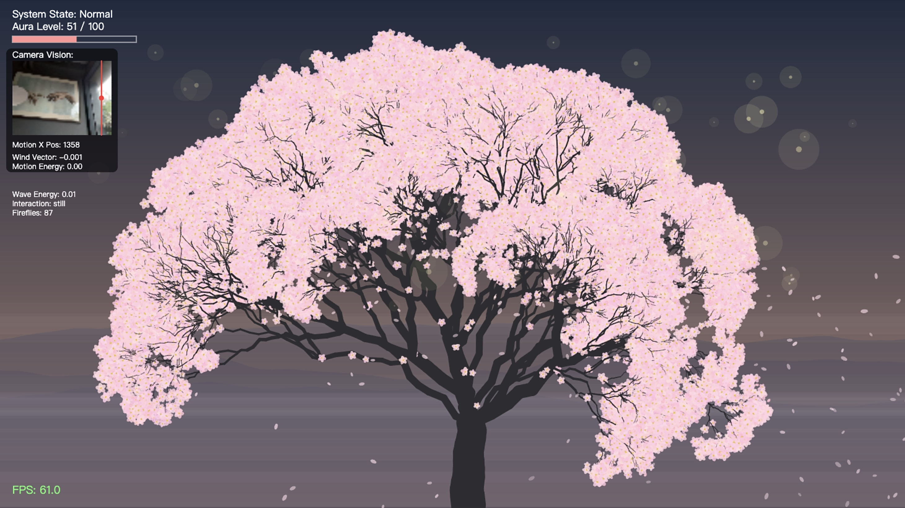
Scatter.
Reset.
Overview
Before It Falls is an interactive generative installation built around the fleeting life of cherry blossoms. Instead of presenting a fixed animation, the work behaves like a small responsive world: the environment shifts when someone approaches, glowing particles gather around movement, and collective motion builds energy until petals begin to fall.
The project explores how a digital landscape can feel alive even before anyone touches it, and how interaction can move beyond a direct cause-and-effect gesture into atmosphere, anticipation, and change over time.
A world in continuous change
The same tree moves through changing light, weather, particles, and energy states. The environment becomes visual feedback for the viewer’s presence and movement.
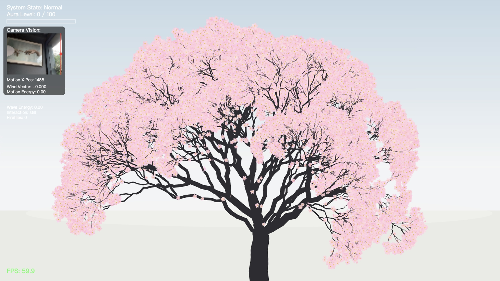
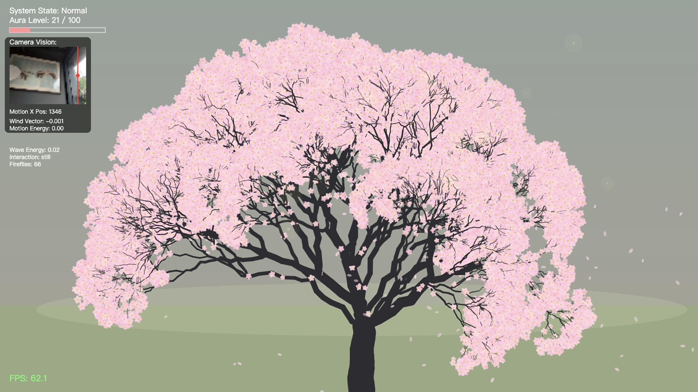

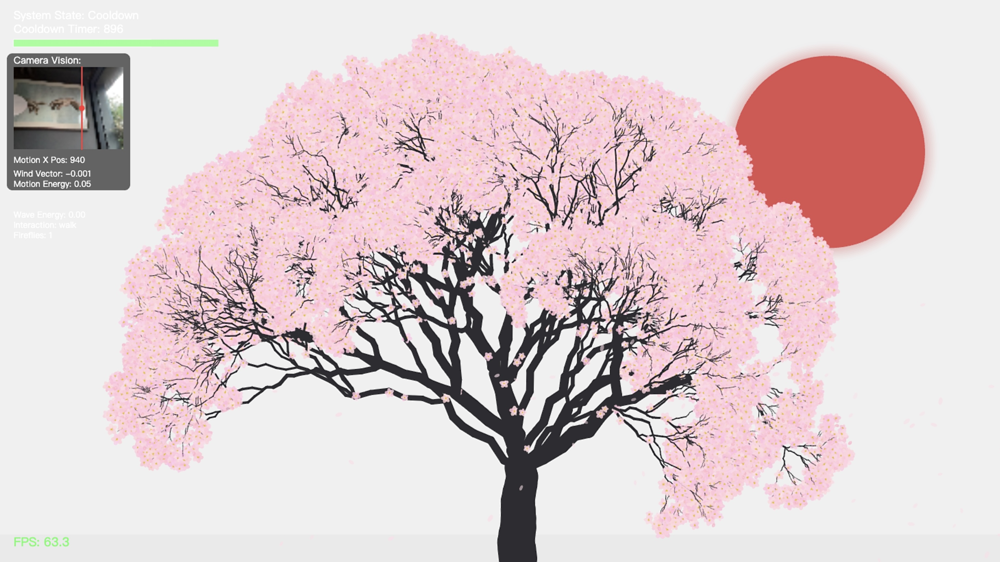
A cycle shaped by presence
PASS BY
The background and music subtly shift to catch attention.
APPROACH
The installation begins responding more visibly to the viewer.
WAVE
Firefly-like particles hover around the viewer’s movement.
TRIGGER
Movement fills an energy bar and activates the petal-fall event.
RESET
When energy returns to zero, the world settles and waits again.
From subtle environmental shifts to particles, rain, and falling petals, the full interaction unfolds as a continuous response to human movement.
Building a world that feels alive
The project evolved through a series of visual, technical, and interaction problems. Each constraint pushed the system away from a simple tree animation and toward a more complete installation experience.
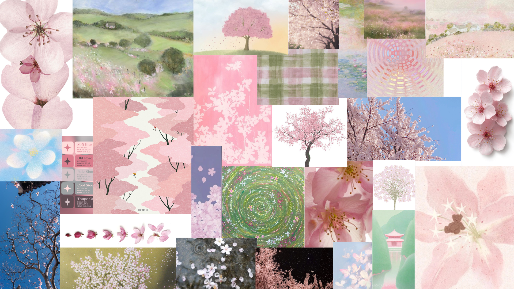
Finding the atmosphere
Soft color, organic irregularity, and a sense of something already beginning to disappear.
From Fractal to Organic
I began with a Branch class so each limb could exist as an object with parent-child relationships. Purely random procedural trees quickly became stiff or awkward, so I split long branches into smaller segments and introduced slight X/Y offsets at each joint to create a more weathered, irregular silhouette.
I then combined manual curation with recursion: the first generation of branches was explicitly designed, while later generations were generated algorithmically.
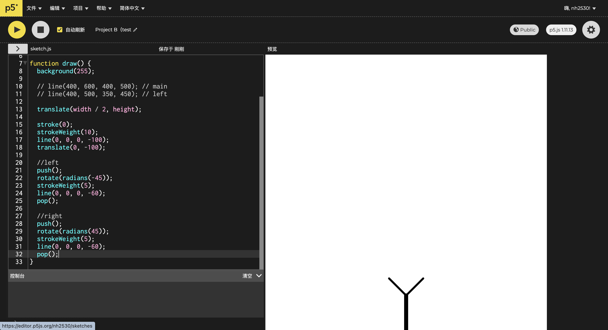
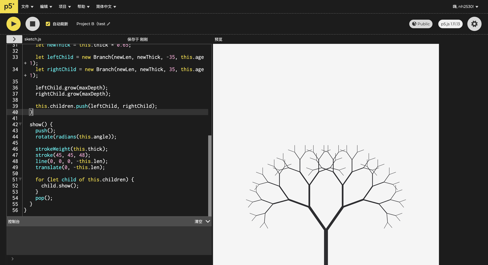
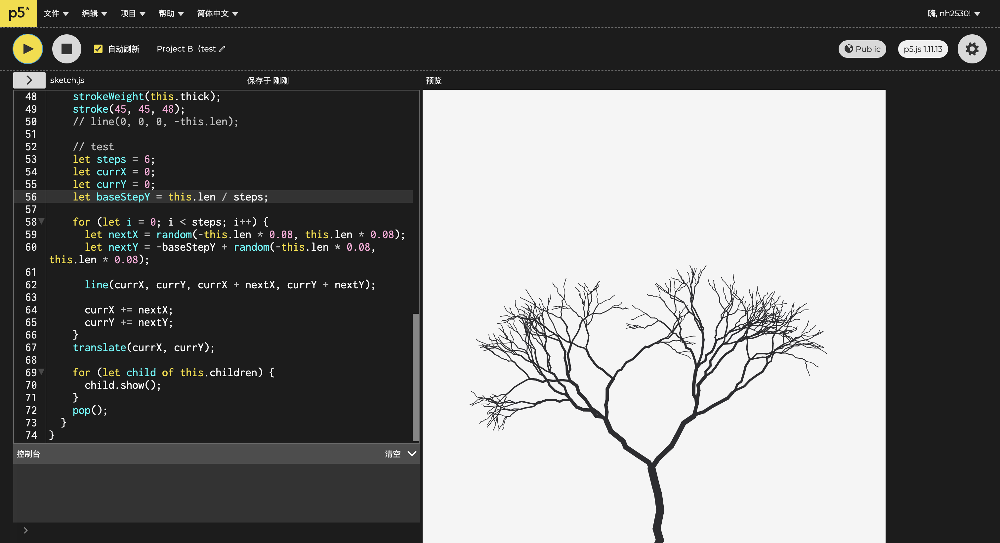
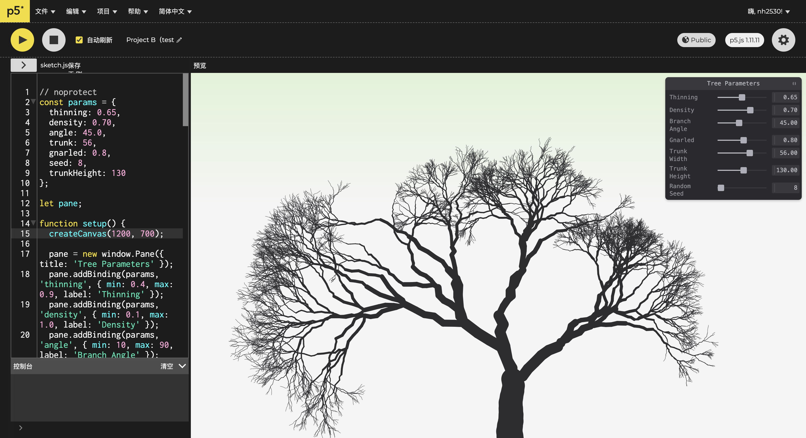
Designing the Blossom System
I drew individual sakura petals with beginShape() and bezierVertex(), including the small cleft at the tip. Transparency created a layered watercolor effect, while randomized pink tones, rotation, and multiple lifecycle states prevented the canopy from feeling like a repeated digital texture.
Buds and blossoms coexist so the tree carries rhythm rather than appearing frozen at one perfect moment.
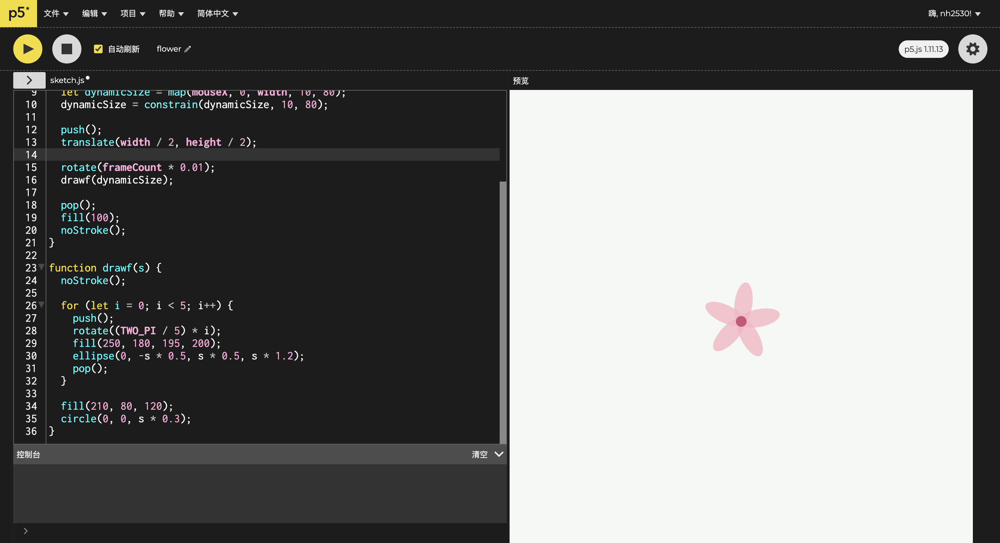
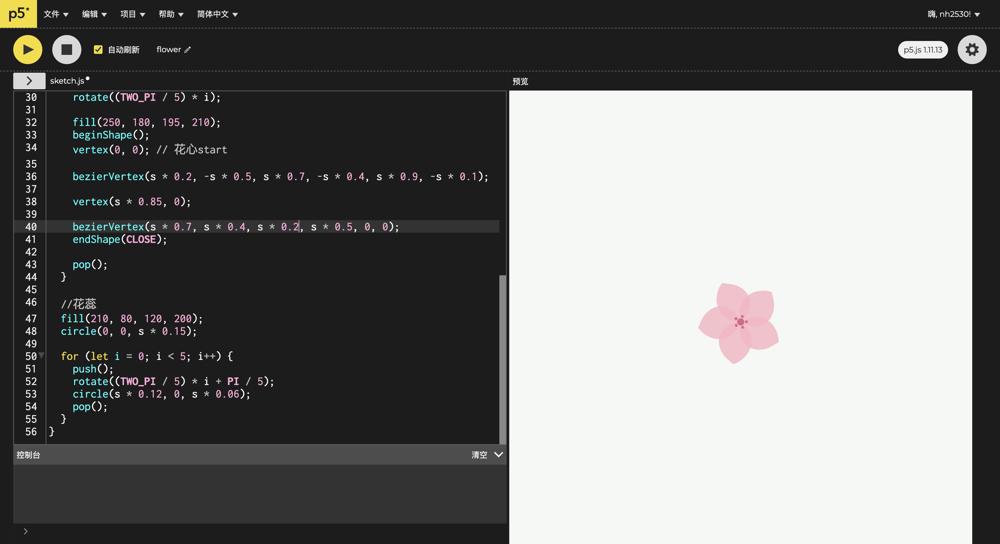
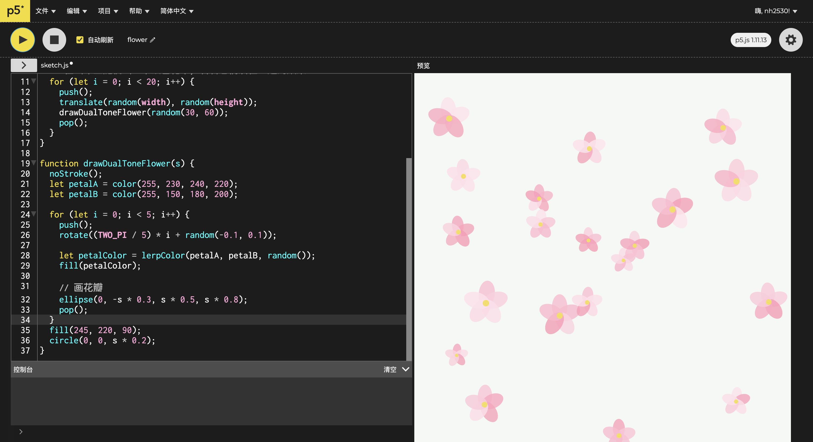
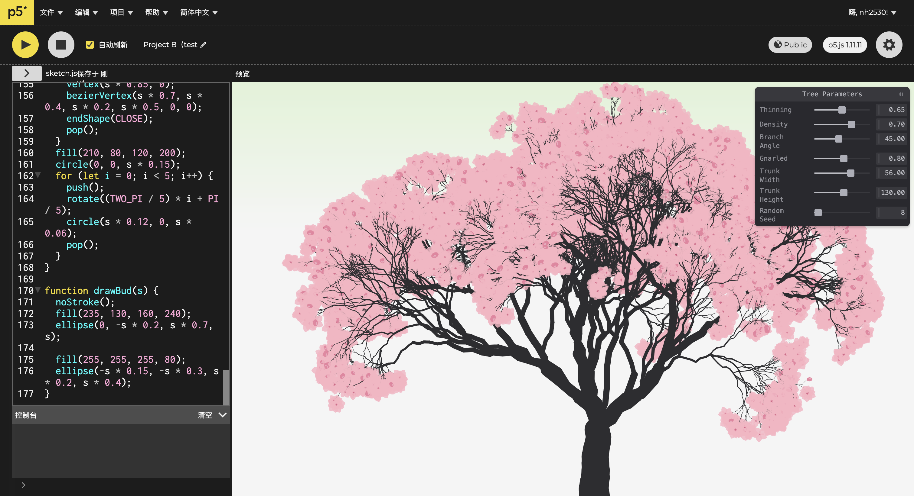
Thousands of Blossoms, One Problem
Once falling petals were introduced, the frame rate collapsed under the number of calculations. The solution was to separate static and dynamic content. The tree and attached blossoms were rendered once onto a transparent off-screen layer, while only the moving petals and interactive particles remained on the main canvas.
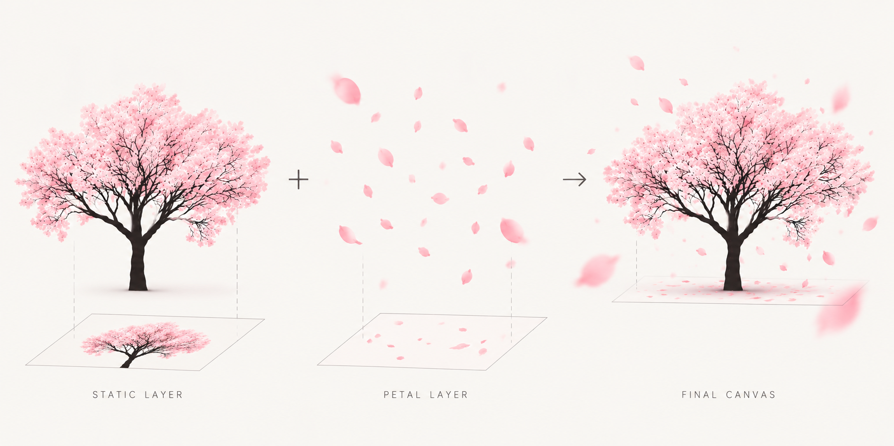
When Simulation Became Narrative
I initially wanted blossoms on the tree to visibly decrease as petals fell. Separating them from the fixed layer broke the visual depth and made the tree feel like stacked stickers. Rather than forcing the effect, I changed the interaction model.
Movement now contributes to an energy system that drives environmental change. This transformed the project from “touching a tree” into influencing an entire world with a beginning, trigger, release, and reset.
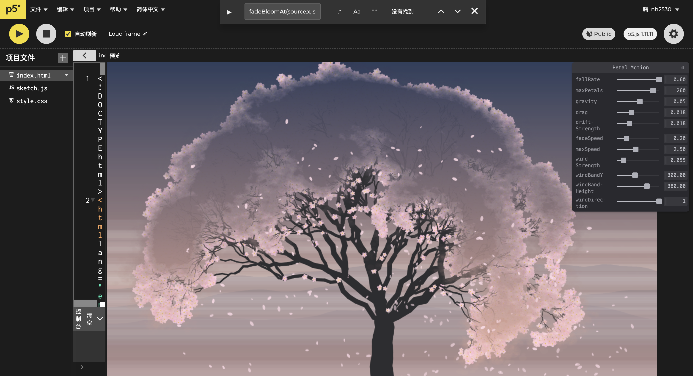
The environment listens back
Sound was treated as part of the interaction rather than background decoration. I mixed bird chirps and rain ambience, edited an ending theme in REAPER, and added a bell cue for scene transitions. Volume and energy respond to human movement so the soundscape participates in the same cycle as the visuals.
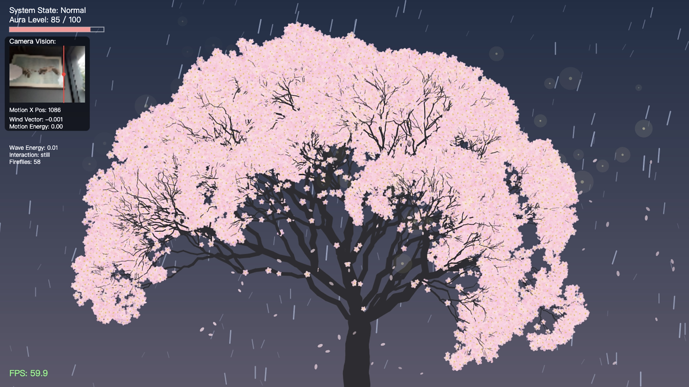
NYU Show
The piece changed once it entered a crowd. Passing bodies, raised arms, and overlapping movements turned a controlled interaction into a live social system.
What changed after testing it with people
01 — Idle state matters
An interactive installation should not look like it is waiting to be activated. It needs to feel compelling even when nobody is there. A darker rainy-night opening would create a stronger visual and emotional hook.
02 — Crowds change the rules
I tested an “instant bloom” interaction where flowers appeared beneath users’ fingertips. It felt too chaotic for a public exhibition, so I removed it. Designing for a crowd required fewer gestures and clearer environmental feedback.
03 — Next experiment
I would like to develop synchronized multi-user blooms and projection mapping, allowing the tree to react only when multiple movements align and making the digital landscape feel more physically present in space.